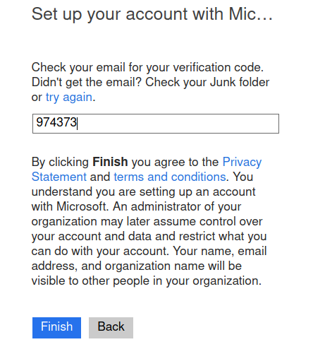
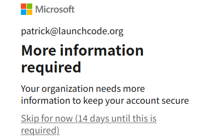
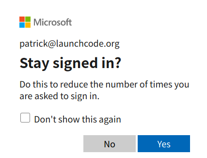
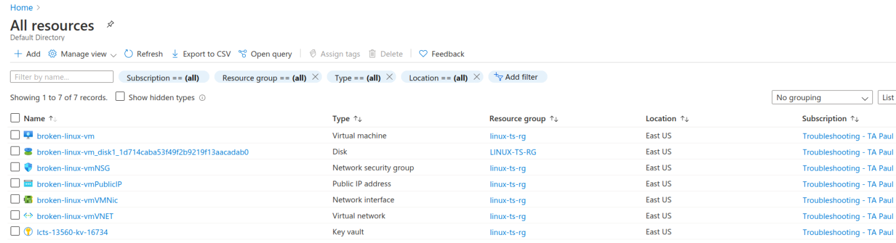
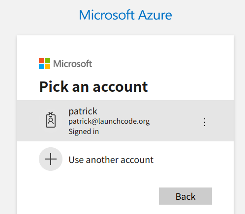
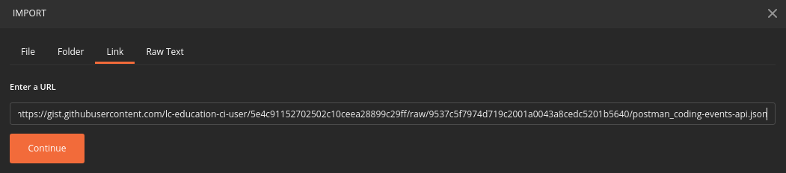
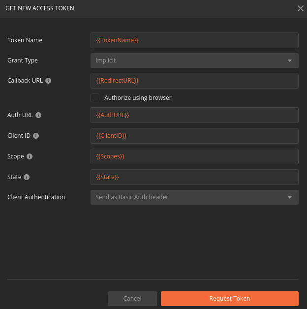
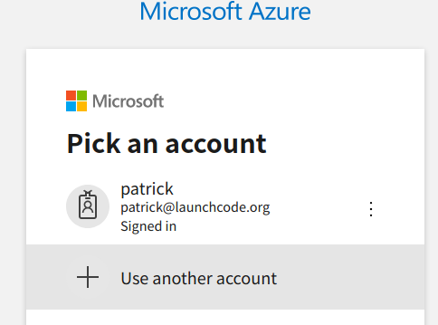
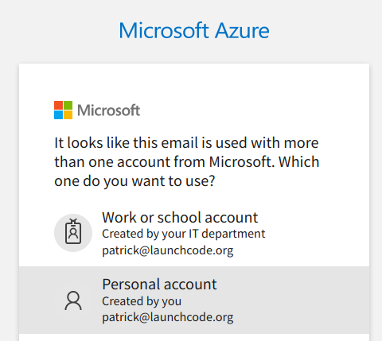

This walkthrough is different from the walkthroughs you have done so far. Troubleshooting skills can only be developed through experience. The methodologies and tools can be taught, but the experience can only be gained from solving real-world problems. You will be working as a group, like you would be on a professional team. Together your group will be troubleshooting a broken deployment. You will need to work together to engage in a troubleshooting discussion to reach a resolution to the issues presented in the deployment.
Each student will be given read-only access to the Azure resources used in the deployment. Your TA will be the only member of your group with administrative access. For each issue the group encounters, your TA will facilitate discussion and take any actions the group agrees upon.
Warning
You will be collaborating with your group members and TA. Make sure you do not change anything in the machine. Your role is purely observational. The TA will perform any mutating actions to ensure a manageable process for everyone in the group.
After setting up access of the group members, you will have one hour to reach a functional deployment. After the time is up, your instructor will walkthrough each issue and its resolution.
Note
Take your time on each issue. The purpose of this exercise is to engage as a team in identifying, isolating, and resolving issues with a live deployment.
For this troubleshooting exercise we will need troubleshooting tools to work with our broken deployment. Luckily, some of these tools will look familiar, as we have worked with them throughout this course.
Note
The tools we use in this exercise are not exhaustive. Due to the variable nature of deployments, many different tools have been created to assist in troubleshooting. Throughout your career you will use many of these different tools as a response to different systems, tech stack, or team preferences.
In large-scale systems you would rely on bulk remote-management tools, but in our case we only need to manage one machine. For our Linux machine we will use ssh to securely connect to the shell of the provisioned VM.
We are bound to the tools that come included in the selected Ubuntu image. This includes the file system navigation tools you learned in the Bash chapter, and the following:
cat or less: to inspect configuration filesservice: to view the status of the servicesjournalctl: to view log outputscurl: to make network requests from inside the Ubuntu machineOutside of the host machine, we will use the following tools for external troubleshooting:
az CLI: for information about each resource component (or the Azure web portal)Invoke-RestMethod: to make network requests from your Windows development machineWithin the Setup section of this walkthrough your TA will invite you to your Reader role for accessing the Azure resources related to this broken deployment. After you have accepted the invitation and configured your default resource group and VM in the az CLI you can request the public IP address of the VM.
Using the az CLI you can store the public IP in a variable so it can be used as the host component of the ssh command:
> $VmPublicIp = az vm list-ip-addresses --query '[0].virtualMachine.network.publicIpAddresses[0].ipAddress'
The first time you connect to a machine over SSH you will be prompted to trust or reject the remote host. When prompted enter yes to trust the host and connect to it:
> ssh student@$VmPublicIp
# trust the remote host
# enter password: LaunchCode-@zure1
Warning
Using knowledge-based authentication (username and password) is much less secure than using something owned like a private (digital) key. The topic of using RSA keys with SSH falls outside the scope of this course, but you should know it is more secure and the preferred mechanism.
We will authenticate using credentials to avoid distracting from the learning goals of this troubleshooting exercise.
Once you have connected to the machine, you will be able to navigate and use Bash and the tools listed above to gather information and plan a solution with your group.
Note
If you are not on a Windows machine, remember that you will need to output in TSV format using the -o tsv option:
$ vm_public_ip=$(az vm list-ip-addresses -o tsv --query '[0].virtualMachine.network.publicIpAddresses[0].ipAddress')
$ ssh student@"$vm_public_ip"
# trust the remote host
# enter password: LaunchCode-@zure1
service¶The service program is a wrapper that simplifies how several of the init systems on a Linux machine can be managed through a single tool. Init systems are used to initialize and manage background processes running on Linux systems.
On Ubuntu machines the systemd init system and its client program systemctl (system control manager) are used by default to manage service units. In the configuration script of our final deployments we created a systemd unit file to define how our Coding Events API would be operated as a background service on the Ubuntu VM. The script also used the service tool (rather than the underlying systemctl it wraps) to make our script portable across supporting Linux distributions.
In addition to controlling services, the service tool can be used to view the status of any registered service units like our coding-events-api, nginx, and mysql:
Warning
Be mindful of your group’s effort in troubleshooting the deployment. Only use the service tool for observation with the status command.
After reaching a group consensus your TA can issue the service commands that mutate service state.
service <service-name> status
For example, if you were to check the status of a functioning API service you would receive the following output:
$ service coding-events-api status
● coding-events-api.service - Coding Events API
Loaded: loaded (/etc/systemd/system/coding-events-api.service; disabled; vendor preset: enabled)
Active: active (running) since Tue 2020-10-31 19:04:51 UTC; 1 day 4h ago
Main PID: 18196 (dotnet)
Tasks: 16 (limit: 4648)
CGroup: /system.slice/coding-events-api.service
└─18196 /usr/bin/dotnet /opt/coding-events-api/CodingEventsAPI.dll
journalctl¶The journalctl tool can be used to view the logs written by systemd services. You can use it to view the logs of a particular service unit using the -u (unit name) option:
$ journalctl -u <service-name>
The systemd journal can store thousands of logs and lines within them. Often it is useful to view just the most recent logs. The -f option will follow the logs starting from the last 10 lines and continuously display new lines as they are written:
$ journalctl -f -u <service-name>
# shorthand (-u comes after to pair with the service name argument)
$ journalctl -fu <service-name>
Note
Like other foreground CLI programs that attach to your Terminal, you can use ctrl+c to exit journalctl.
A self-signed certificate means that the signature used to sign the certificate is not recognized by an external certificate authority (CA). These certificates can still be used for TLS encryption but are not inherently trusted like traditional SSL certificates due to their unknown signing authority. By default, HTTP client applications like browsers or CLI tools will automatically reject self-signed certificates as a security measure.
In our configure-ssl.sh deployment script our VM internally generated the signing key used to sign the SSL certificate with the openssl tool. Recall that when you first connected to the Swagger documentation of your API in the browser, you had to bypass the warning and accept (explicitly trust) the self-signed certificate. CLI tools can be configured similarly to also accept self-signed certificates.
When working with Invoke-RestMethod cmdlet the default certificate validation behavior for self-signed certificates results in the following error for servers using self-signed certificates:
Invoke-RestMethod: The remote certificate is invalid according to the validation procedure.
We can override the default validation procedure by using the -SkipCertificateCheck option:
> Invoke-RestMethod -Uri https://<PUBLIC IP> -SkipCertificateCheck
Similarly, when working inside the Ubuntu VM with curl the validation can be skipped using the -k option:
$ curl https://localhost -k
When troubleshooting within a VM, you can use curl to isolate networking-related issues. If you are able to connect successfully from inside the machine, but receive a timeout when connecting externally, it indicates that an internal firewall or external network security rule is the issue.
Note
In Ubuntu the default ufw tool is used for managing internal firewall rules.
When troubleshooting, your first step is to form a mental model of the system you are working on. Due to the introductory nature of this course, you and your group will begin by discussing what you know about a fully functioning system. Consider all of the deployment components you have learned throughout this course. Pay particular attention to the components that have given you trouble in your previous studios.
For each component, you should define what expectations need to be met for it to operate in a healthy state and which misconfigurations could lead to a failed state. By thinking about the system holistically you will be able to keep track of which expectations are not met and collectively decide on the actions needed to reach a resolution.
These assumptions will be the starting points for troubleshooting once your group gains access to Azure. Any expectations that are not met in the broken deployment will offer a clue as to what needs to be fixed.
Your TA will lead your group in this discussion you will have 20 minutes to discuss the system. Consider the network, service, host, and application levels with regards to the Coding Events API:
You do not need to be exhaustive, but every expectation you define will help guide you when you are troubleshooting. For example, if you were to describe the components in the service level:
You could then proceed to list some of the expectations of an operational AADB2C component:
user_impersonation scope for restricting access to the API that has been granted to the Postman clientNote
After you gain experience with troubleshooting, you will be able to hone in on one component or level at a time. However, when you are just starting out it is beneficial to think about the system as a whole.
Before the troubleshooting timer begins, you will need to work with your TA to set up your access to the Azure resources and VM. For this walkthrough your TA will grant you Reader access to their directory and lab subscription. Once you have registered with their directory and assumed the Reader role, you will be able to access the public IP address of the VM and ssh into the machine.
For this exercise, an Azure subscription will be setup for your group. Your TA will be the administrator of this group and each student will have read-only access. You will be able to view the deployment components, but will need to work together with your team to diagnose the issue and tell your TA how to resolve it.
Even though you already have an account with Microsoft, it is only associated with your subscription. In order to access your TA’s subscription (and the resources of the broken deployment) you will need to register an account in their directory through the following steps:
The first step is accessing the email that was sent from Microsoft on your TAs behalf. The email will include a link that will allow you to associate your email address with a new account under the directory and subscription the TA administers.
Upon clicking the link you will be taken to a Microsoft web page that will prompt you to create an account in your TA’s tenant directory.
The form will come pre-populated with your email address (since you navigated to the webpage from your email client) and you will need to enter a password.
This account, and subscription, will be temporary, so we will use the same password to make things consistent. Copy the password below, then paste it in the form to avoid spelling mistakes:
LaunchCode-@zureAn email will be sent to you containing a security code. Copy the code and paste it into the verification form:
You will then be prompted to accept the invitation permissions (select Accept):
Note
It may take some time for the account to be created.
At the next prompt, you can select the Skip for now link, as this is only temporary for this final exercise:
Then select Yes to stay signed in:
You now have access to the resources created under the TA troubleshooting subscription. Select All Resources from the home dashboard to confirm that the broken deployment resources are available for you to view:
First we need to clear the AZ CLI cache:
> az account clear
Now we need to login again which will present us with the form to authenticate:
> az login
Because you selected Stay signed in, from the previous step, it will default to your account within the TA tenant directory. All you need to do is select your name from the list:
Back in your PowerShell Terminal you will see your account information output:
> az login
# output example
[
{
...trimmed...
"id": "095dea07-a8e5-4bd1-ba75-54d61d581524",
"name": "Troubleshooting - TA <Name>",
"user": {
"name": "patrick@launchcode.org",
"type": "user"
}
...trimmed...
}
]
Warning
Before continuing, confirm that the name of the subscription matches your TA name: Troubleshooting - TA <Name>.
After configuring the AZ CLI to use the new subscription, let’s set up our AZ CLI defaults for the correct resource group and virtual machine:
> az configure -d group=linux-ts-rg vm=broken-linux-vm
You can verify everything worked by looking at the default VM. It should be identical to your group-mates and TA:
> az vm show
Note
You only have read-access to the resources in your TA’s Azure subscription. Feel free to look around all you want, however any Azure commands will need to be run by your TA.
For this walkthrough, you will use a Postman collection that has the AADB2C details pre-configured as variables.
You can import this collection by selecting the Import button and then selecting the Link tab in the import window. Paste in the following link then select Continue:
After importing, you will need to update your access token settings to use the following pre-defined variables (from top to bottom of the access token form). As a reminder, you can access this by selecting the three dots next to the collection name, selecting Edit then from the Authorization tab select Get New Access Token:
{{TokenName}}{{RedirectURL}}{{AuthURL}}{{ClientID}}{{Scopes}}{{State}}Note
You can copy and paste each {{Variable}} value into the settings form. If you misspell any variable it will turn red.
If you would like to preserve your existing settings, you can copy them to another document before pasting in the variable references.
After updating the form your settings should match the image below:
You can now request an access token and create a new account in this shared AADB2C tenant. After receiving your access token, leave the edit collection window open.
baseURL Variable¶From the Authorization tab select the Variables tab. Then (as seen in a previous studio) in the Current Value entry on the right side replace the current value, https://localhost:5001, with the public IP address of your group’s VM:

Note
You will not currently be able to access the API due to the broken state of the deployment. However, once you and your group have resolved enough issues to begin making requests you will not need to configure anything else in Postman.
Warning
While troubleshooting all changes made to the state of a component needs to be accounted for. Defer to your TA for taking any mutating actions—do not make changes on your own.
As your TA makes changes, consider the outcome and adjust your mental model accordingly.
Once everyone in your group has configured access to Azure you can begin troubleshooting! You can start by using external tools for diagnosis (like the browser, az CLI or Invoke-RestMethod). Then for each issue you discover you can use the following prompts to discuss and progress towards resolving it:
If you and your group are able to fix the deployment, you will be able to load the Swagger documentation at the public IP of the host machine. At this point, the API will be fully functional and you can complete your final mission using Postman:
Note
You do not need to reset your AZ CLI to complete this walkthrough. However, if you would like to continue working with your resources for the remaining time in the course, the following instructions can be used.
First re-issue the account clear and login commands:
> az account clear
> az login
This time rather than selecting the default account (the account registered in your TA’s directory) you will select the User another account option:
Enter your email address for Azure to look up all related accounts.
Note
Although your email is the same this process allows you to differentiate between different accounts associated with the same email address login.
From the select account view you will need to select the Personal Account option:
Back in your PowerShell Terminal you will now see the subscriptions associated with your personal account.
Warning
If you can still view an account output that has your TA’s subscription name (Troubleshooting - TA <Name>) you have selected the wrong account. Restart the process and make sure you select Personal Account.